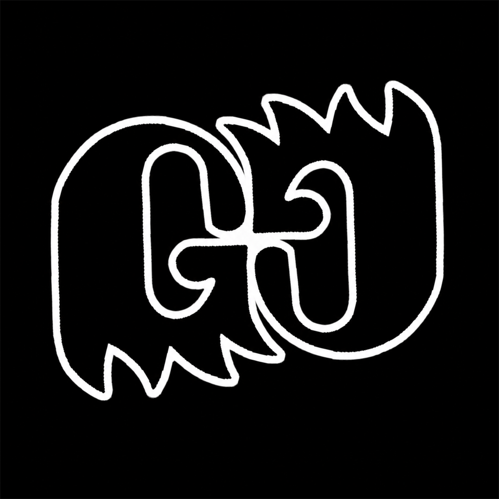

One authorized operator
The current TikTok integration is limited to one approved Sandbox test account controlled by DJ Ghostly. There are no public users or public registration.

DJ Ghostly DashboardPrivate developer sandbox
DJ Ghostly Dashboard is a locally operated desktop workflow for reviewing DJ recordings, preparing approved short-form video, and sending selected content to an authorized social account only after the operator presses the platform-specific publish button.
The current TikTok integration is limited to one approved Sandbox test account controlled by DJ Ghostly. There are no public users or public registration.
TikTok test delivery is restricted to SELF_ONLY. Public posting will not be enabled without a later platform review and a separate readiness decision.
The dashboard does not publish autonomously. The operator reviews the video, caption, disclosures, privacy, and interaction choices before every upload.
Application credentials, authorization tokens, source videos, and recovery state remain on the operator's computer. This website contains no dashboard source code or account credentials.
Questions about this private developer test can be sent to dj.ghostly.dj@gmail.com.